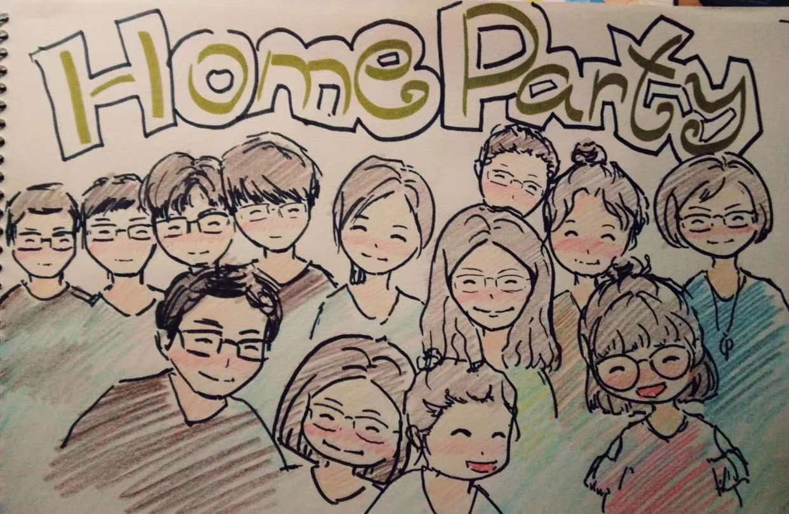
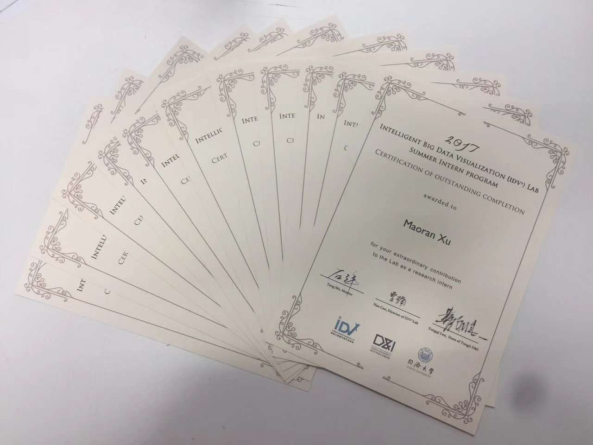
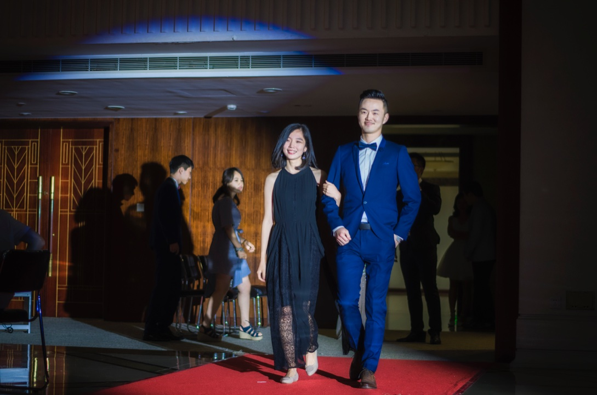
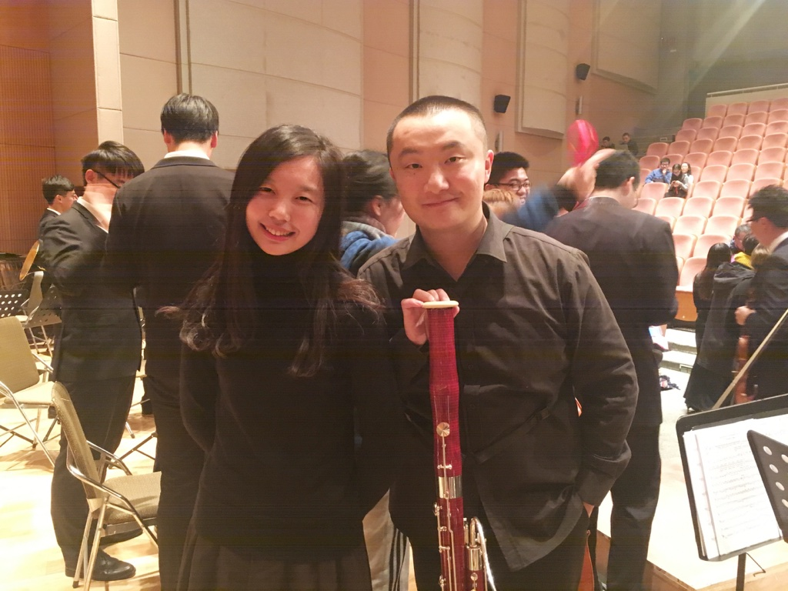
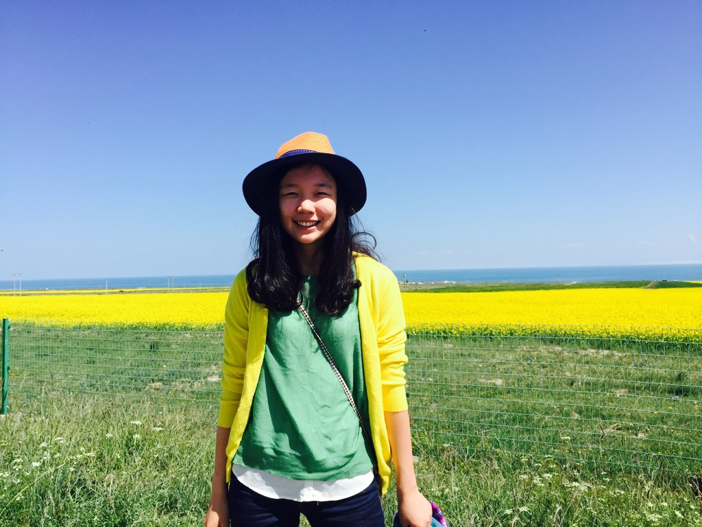
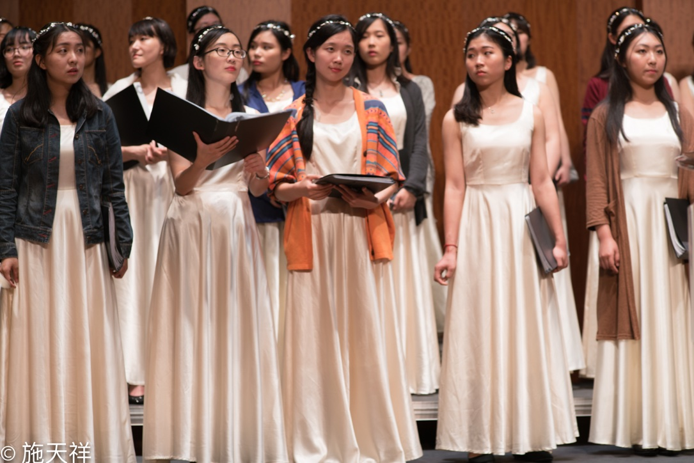

<!-- <div class="jumbotron"> -->
<div class="row marketing">

	<div itemscope itemtype="http://data-vocabulary.org/Person" class="col-sm-8">

		<h3>Latest NEWS!</h3>
		<p>
			9/19/2017: Submitted my first draft to ACM SigCHI!
		</p>
		
		<p>
			8/31/2017: Completed my summer internship at IDVx Lab.
		</p>
		
		<h3>Moments</h3>
		<p>
			Invited to big brother's graduation celebration.
			
		</p>

		<p>
			Played Beethoven-Sonata for Violin and Piano No.9 on the Summer Chamber-music Concert.
		</p>
			
		<p>
			Summer 2016, traveled in Qinghai.
		</p>
				
		<p>
			May 2016, sang on Echo Flore Concert.
		</p>
					
	</div>
</div>
<!-- </div> -->

